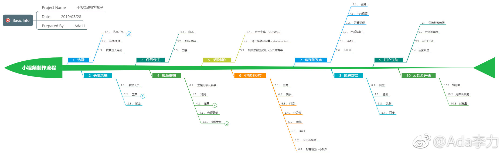

#创业#前一段花了不少时间玩了下视频，今天把小视频的整个流程用思维导图梳理了下。既然内容制作是免不了的事情，我就很愿意把这个事情流程化，来提升生产效率。另外，在总结这个流程的过程中，让我更明确几件事情：
1. 这个流程里，最核心的点在哪里，这个点一定是自己要能把控的
2. 能够分派出去的任务，应该核查那些数据
3. 把人员和时间，这些数据维度再加上的话，成本很容易核算出来
4. 虽然流程里每个环节描述看起来字数差不多，优先级还真不一样
5. 写流程虽然要面面俱到，但执行起来，不必这样。面面俱到，等于没重点。
1. 这个流程里，最核心的点在哪里，这个点一定是自己要能把控的
2. 能够分派出去的任务，应该核查那些数据
3. 把人员和时间，这些数据维度再加上的话，成本很容易核算出来
4. 虽然流程里每个环节描述看起来字数差不多，优先级还真不一样
5. 写流程虽然要面面俱到，但执行起来，不必这样。面面俱到，等于没重点。
- 